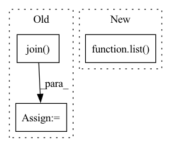

Pattern ID :15749
Before Change
hour = datetime.datetime.now().hour
minute = datetime.datetime.now().minute
second = datetime.datetime.now().second
folder_save = os.path.join( output_dir, env_to_control, str(year) + "_m" + str(month) + "_d" + str(day))
if not os.path.exists(folder_save):
os.makedirs(folder_save)
fig.savefig(os.path.join(folder_save, "history" + "_h" + str(hour) + "_m" + str(minute)
+ "_s" + str(second) + ".png"))After Change
axes[1][0].fill_between(indexes, 0, 2 * predictions_std_over_time_show[:, state_idx],
label="p_2std" + str(state_idx),
color=plt.get_cmap("tab20").colors[2 * state_idx + 1], alpha=0.6)
axes[1][1].plot(list( indexes_control * num_repeat_actions) ,
np.array([element for element in prediction_info_over_time["cost"]]), label="cost", color="k")
axes[1][1].plot(list(indexes_control * num_repeat_actions), mean_cost_traj, label="cost trajectory", color="orange")
axes[1][1].fill_between(list(indexes_control * num_repeat_actions), mean_cost_traj - 2 * mean_cost_traj_std,In pattern: SUPERPATTERN
Frequency: 3
Non-data size: 3
Instances Fragment ID: 53198617
Project Name: simonrennotte/data-efficient-reinforcement-learning-with-probabilistic-model-predictive-control
Commit Name: 9015f11e4b8d1ea824115b9b69570848bb92e174
Time: 2020-12-18
Author: simon.rennotte@hotmail.com
File Name: control_objects/utils.py
M Class Name: AnonimousClass
N Class Name: AnonimousClass
M Method Name: save_plot_history_process(6)
N Method Name: save_plot_history_process(6)
M Parent Class:
N Parent Class:
M File Name: control_objects/utils.py
N File Name: control_objects/utils.py
M Start Line: 18
M End Line: 69
N Start Line: 18
N End Line: 58
Before Change
for i in range(0, len(all_examples), batch_size)
]
// The new key is the concatenation of the keys of each example in the batch
expected_keys_per_batch = [
["_".join( key for key, _ in all_examples[i : i + batch_size]) ] * len(examples)
for i, examples in zip(range(0, len(all_examples), batch_size), expected_examples_per_batch)
]
// Combine keys and examplesAfter Change
all_transformed_examples.extend(_batch_to_examples(transformed_batch))
expected = _examples_to_batch(all_examples)
expected.update(_examples_to_batch(all_transformed_examples))
expected = list( _batch_to_examples(expected))
assert next(iter(ex_iterable))[1] == expected[0]
assert list(x for _, x in ex_iterable) == expected
Fragment ID: 53198623
Project Name: huggingface/datasets
Commit Name: 4b9334007e069ad71630ba36283d3abafba42174
Time: 2022-03-07
Author: 42851186+lhoestq@users.noreply.github.com
File Name: tests/test_iterable_dataset.py
M Class Name: AnonimousClass
N Class Name: AnonimousClass
M Method Name: test_mapped_examples_iterable(4)
N Method Name: test_mapped_examples_iterable(4)
M Parent Class:
N Parent Class:
M File Name: tests/test_iterable_dataset.py
N File Name: tests/test_iterable_dataset.py
M Start Line: 189
M End Line: 208
N Start Line: 184
N End Line: 197
Before Change
else:
filename = ("QAPtrain_{}_{}_{}.np".format(self.generative_model,
self.noise, self.edge_density))
path = os.path.join( self.path_dataset, filename)
if os.path.exists(path):
print("Reading training dataset at {}".format(path))
with open(path, "rb") as f:
self.data_train = np.load(f, allow_pickle=True)After Change
print("Reading dataset at {}".format(path))
with open(path, "rb") as f:
data = np.load(f, allow_pickle=True)
self.data = list( data)
saving = False
if len(self.data) == 0 or len(self.data) != self.num_examples:
print("Creating dataset.")
self.data = [] Fragment ID: 53198614
Project Name: mlelarge/graph_neural_net
Commit Name: 5adb23122ceb14ce6e09e6009e2d084dc74f5402
Time: 2020-02-10
Author: marc.lelarge@gmail.com
File Name: loaders/data_generator.py
M Class Name: Generator
N Class Name: Generator
M Method Name: load_dataset(2)
N Method Name: load_dataset(1)
M Parent Class: torch.utils.data.Dataset
N Parent Class: object
M File Name: loaders/data_generator.py
N File Name: loaders/data_generator.py
M Start Line: 103
M End Line: 141
N Start Line: 95
N End Line: 117